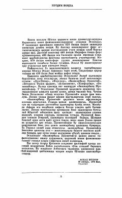

ZPInsoniyatga olov keltirgan Prometeyning matonati va Zevs zulmiga qarshi kurashi haqidagi fojia.
Ushbu asar qadimgi yunon dramaturgi Eshil tomonidan yozilgan mashhur fojia bo'lib, insoniyatga olov hadya etgani uchun Zevs tomonidan jazolangan Prometey haqidagi afsonani hikoya qiladi. Asar inson erkinligi, matonat va zulmga qarshi kurash g'oyalarini o'zida mujassam etgan jahon adabiyoti durdonalaridan biridir.